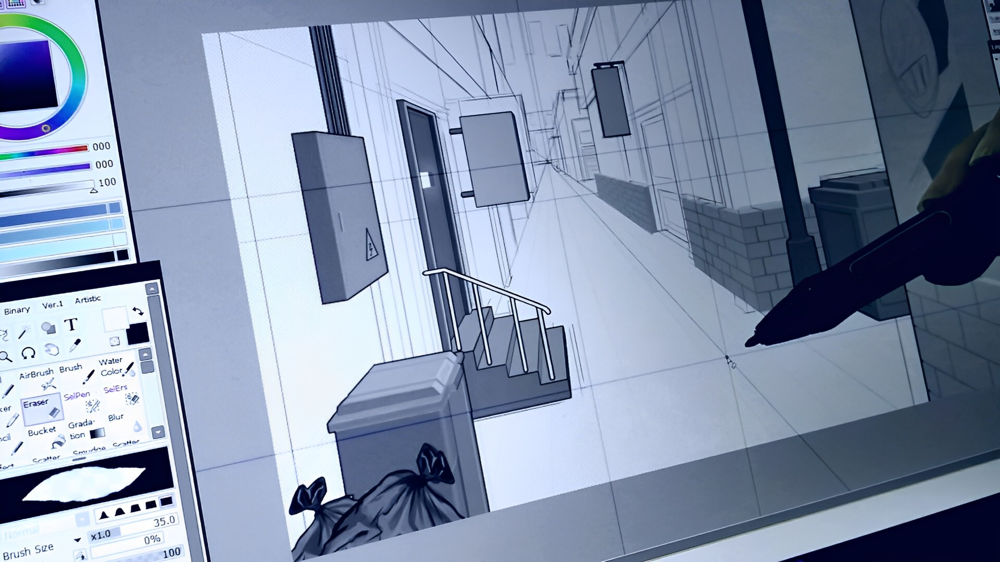
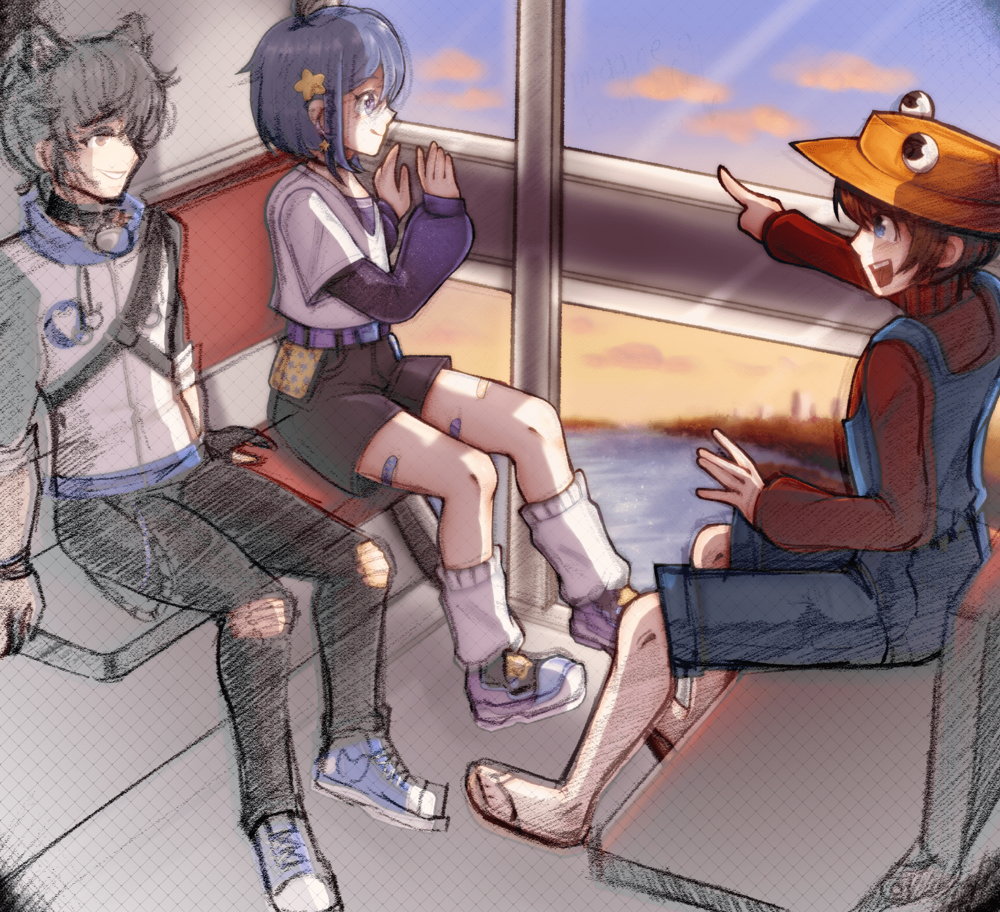

NICE TO MEET YOU!
MEET THE ARTIST
Hi! My name is Dicmary Zambrano, I am a 20-year-old digital artist from Venezuela that dedicates their life to learning and creating art. Ever since I was a little kid, I loved to learn new things.
Arts and crafts, painting and drawing even sewing. If it meant I could bring something new to the world be sure I was doing it!
When I was in high school, I started to take drawing more seriously, and people started to come to me asking if I could make them a drawing. Before I knew I started to be recognized as a talented artist around school, this encouraged me to keep working on my skills and nowadays I am still teaching myself how to be even better than yesterday. I started to do commission in the hopes I could keep funding my education while I create beautiful illustrations for people.
There is just something very special in seeing people get exited when they see the art I made for them, it is a satisfying experience and shading my art with people is what has helped me get this far. I am very grateful for all the people that find value in what I do and I will do my best to keep creating for all of them.